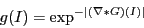

Next: Parameters
Up: Detailed Description
Previous: Detailed Description
This filter requires two inputs. The first input is a initial level set. The initial level set is a real image which contains the initial contour/surface as the zero level set. For example, a signed distance function from the initial contour/surface is typically used. Unlike the simpler ShapeDetectionLevelSetImageFilter the initial contour does not have to lie wholly within the shape to be segmented. The intiial contour is allow to overlap the shape boundary. The extra advection term in the update equation behaves like a doublet and attracts the contour to the boundary. This approach for segmentation follows that of Caselles et al (1997).
The second input is the feature image. For this filter, this is the edge potential map. General characteristics of an edge potential map is that it has values close to zero in regions near the edges and values close to one inside the shape itself. Typically, the edge potential map is compute from the image gradient, for example:

where  is image intensity and
is image intensity and  is the derivative of Gaussian operator.
is the derivative of Gaussian operator.
Next: Parameters
Up: Detailed Description
Previous: Detailed Description
root
2010-06-26